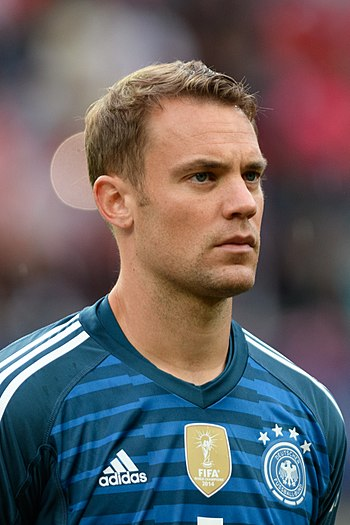
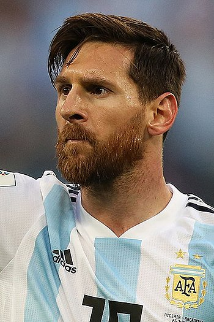
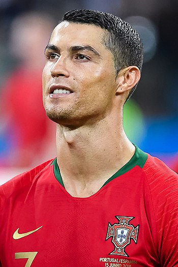
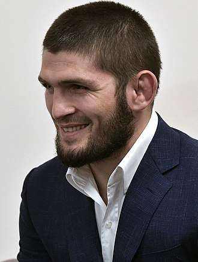

Michael Jeffrey Jordan (born February 17, 1963), also known by his initials MJ,[9] is an American businessman and
former professional basketball player. He is the principal owner and chairman of the Charlotte Hornets of the
National Basketball Association (NBA) and of 23XI Racing in the NASCAR Cup Series. He played 15 seasons in the NBA,
winning six championships with the Chicago Bulls. His biography on the official NBA website states: "By acclamation,
Michael Jordan is the greatest basketball player of all time."[5] He was integral in helping to popularize the NBA
around the world in the 1980s and 1990s,[10] becoming a global cultural icon in the process.[11]
Jordan played college basketball for three seasons under coach Dean Smith with the North Carolina Tar Heels. As a
freshman, he was a member of the Tar Heels' national championship team in 1982. Jordan joined the Bulls in 1984 as
the third overall draft pick, and quickly emerged as a league star, entertaining crowds with his prolific scoring
while gaining a reputation as one of the game's best defensive players.[12] His leaping ability, demonstrated by
performing slam dunks from the free throw line in Slam Dunk Contests, earned him the nicknames "Air Jordan" and "His
Airness". Jordan won his first NBA championship with the Bulls in 1991, and followed that achievement with titles in
1992 and 1993, securing a "three-peat". Jordan abruptly retired from basketball before the 1993–94 NBA season to
play Minor League Baseball, but returned to the Bulls in March 1995 and led them to three more championships in
1996, 1997, and 1998, as well as a then-record 72 regular-season wins in the 1995–96 NBA season. He retired for a
second time in January 1999 but returned for two more NBA seasons from 2001 to 2003 as a member of the Washington
Wizards.
Jordan's individual accolades and accomplishments include six NBA Finals Most Valuable Player (MVP) Awards, ten
scoring titles (both all-time records), five MVP Awards, ten All-NBA First Team designations, nine All-Defensive
First Team honors, fourteen NBA All-Star Game selections, three All-Star Game MVP Awards, three steals titles, and
the 1988 NBA Defensive Player of the Year Award. He holds the NBA records for career regular season scoring average
(30.12 points per game) and career playoff scoring average (33.45 points per game). In 1999, he was named the 20th
century's greatest North American athlete by ESPN, and was second to Babe Ruth on the Associated Press' list of
athletes of the century. Jordan was twice inducted into the Naismith Memorial Basketball Hall of Fame, once in 2009
for his individual career and again in 2010 as part of the 1992 United States men's Olympic basketball team ("The
Dream Team"). He became a member of the FIBA Hall of Fame in 2015.

Manuel Peter Neuer (German pronunciation: [ˈmaːnu̯eːl ˈnɔʏ.ɐ, -ɛl -]; born 27 March 1986) is a German
professional footballer who plays as a goalkeeper and captains both Bundesliga club Bayern Munich and the Germany
national team. He is regarded as one of the greatest goalkeepers in the history of the sport.[nb 1] Neuer has been
described as a "sweeper-keeper" because of his playing style and speed when rushing off his line to anticipate
opponents, going out of the goalkeeper box.[5][6][30] He was named the best goalkeeper of the decade from 2011 to
2020 by IFFHS.[31]
Neuer started his career at Schalke 04 where he won the DFB-Pokal and DFL-Ligapokal. In 2011, he signed for Bayern
Munich and has since won 24 trophies, including eight Bundesliga titles and two UEFA Champions League titles. In
2014, Neuer finished third in the voting, behind Lionel Messi and Cristiano Ronaldo, for the FIFA Ballon d'Or award.
He was awarded the UEFA Goalkeeper of the Year and the IFFHS World's Best Goalkeeper five times each.

Lionel Andrés Messi[note 1] (Spanish pronunciation: [ljoˈnel anˈdɾes ˈmesi] (About this soundlisten);[A] born 24
June 1987) is an Argentine professional footballer who plays as a forward and captains both Spanish club
Barcelona and the Argentina national team. Often considered as the best player in the world and widely regarded
as one of the greatest players of all time, Messi has won a record six Ballon d'Or awards,[note 2] a record six
European Golden Shoes, and in 2020 was named to the Ballon d'Or Dream Team. He has spent his entire professional
career with Barcelona, where he has won a club-record 35 trophies, including ten La Liga titles, seven Copa del
Rey titles and four UEFA Champions Leagues. A prolific goalscorer and creative playmaker, Messi holds the
records for most goals in La Liga (467), a La Liga and European league season (50), most hat-tricks in La Liga
(36) and the UEFA Champions League (8), and most assists in La Liga (191), a La Liga and European league season
(21)[9] and the Copa América (12). He has scored over 750 senior career goals for club and country, and has the
most goals ever by a player for a single club.

Cristiano Ronaldo dos Santos Aveiro GOIH ComM (Portuguese pronunciation: [kɾiʃˈtjɐnu ʁɔˈnaɫdu]; born 5 February
1985) is a Portuguese professional footballer who plays as a forward for Serie A club Juventus and captains the
Portugal national team. Often considered the best player in the world and widely regarded as one of the greatest
players of all time, Ronaldo has won five Ballon d'Or awards[note 3] and four European Golden Shoes, both of
which are records for a European player. He has won 31 major trophies in his career, including seven league
titles, five UEFA Champions Leagues, one UEFA European Championship, and one UEFA Nations League title. Ronaldo
holds the records for the most goals (134) and assists (42) in the history of the UEFA Champions League.[9] He
is one of the few recorded players to have made over 1,000 professional career appearances and has scored over
780 senior career goals for club and country.[10] He is also the second male to score 100 international goals
and the first European one to achieve the feat.[11]

Khabib Abdulmanapovich Nurmagomedov[6] (Russian: Хабиб Абдулманапович Нурмагомедов; Avar: ХIабиб ГӀабдулманапил
НурмухӀамадов; [ħabib ʕabdulmanapil nurmuħamadow]; Arabic: حبيب عبد المناف نور محمد, Habib Abdul-Manaf Nur
Muhammad);[7] (born 20 September 1988) is a Russian mixed martial arts (MMA) promoter and retired professional
mixed martial artist.[8] He notably competed in the lightweight division of the Ultimate Fighting Championship
(UFC), where he was the longest-reigning UFC Lightweight Champion, having held the title from April 2018 to
March 2021.
